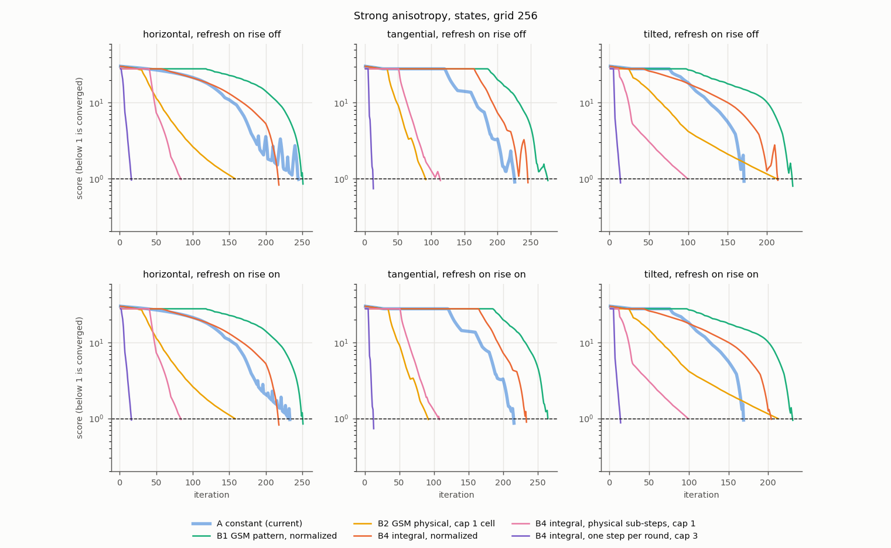
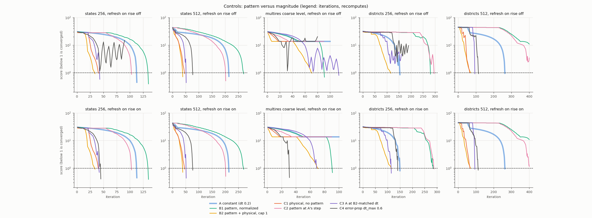
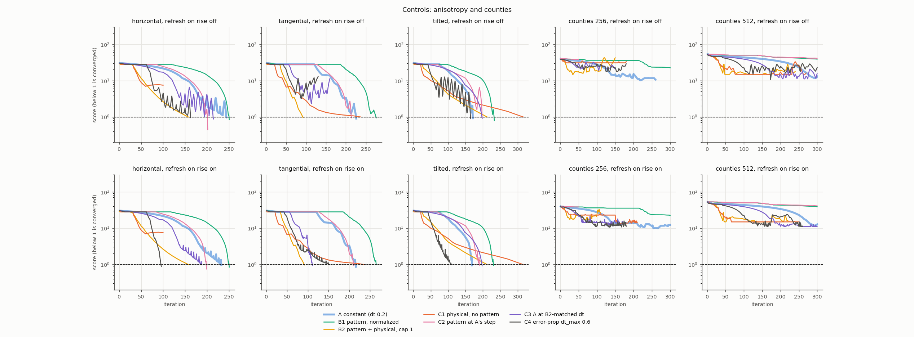
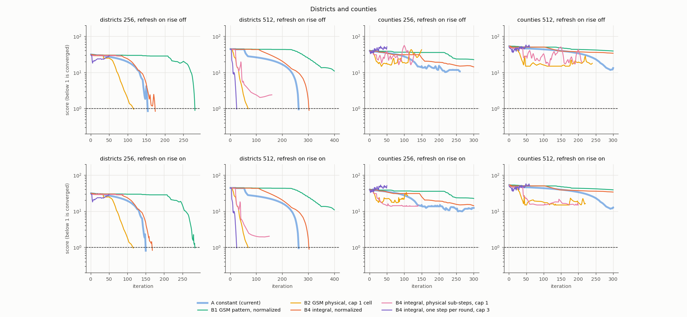
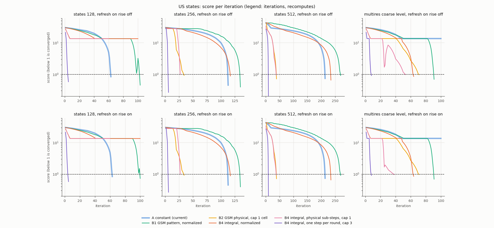

Does replacing carto-flow's constant per-step scale with the GSM scale 1/rho(x,t), inside the existing flow loop, converge faster or more stably? The spatial pattern alone (B1) is slower, adds self-intersections and keeps the tail; the physical magnitude (B2, B4) cuts the cost 3 to 5 times on states and fixes the multires plateau, but needs a per-step cap, stalls on districts (B4) and fails on counties like the baseline. Precomputing the field (B3) is faster only when vertices outnumber grid cells.
An investigation, not a change. The prototype adds four MorphOptions fields (step_scale_mode, step_scale_floor, step_scale_precompute, step_scale_max_cells) and a module step_scale.py; the default (constant) mode reproduces the stored baseline trace for states 256 (113 iterations). One run per cell; load average 0.3 to 1.6; wall times are indicative and the cost model (iterations plus recomputes times the ratio) is the primary metric. tables.md has every variant; the patch is in code/gsm_scale.patch.
| name | mode | per step |
|---|---|---|
| A | constant | current: the fastest grid point moves dt cells |
| B1 | gsm_normalized | velocity times rho_mean / rho(x,t), renormalized every step so the fastest grid point moves dt cells (pattern only) |
| B2 | gsm_physical | raw velocity times 1 / (recompute_every * rho(x,t)); path length 1 per round, as in the GSM preview prototype |
| B3 | step_scale_precompute | grid field W_k = v f_k per step, one interpolation (applies to B1 and B2) |
| B4ii | integral_normalized / integral_physical | closed-form round field W = v ln(rho_mean/rho0) / (rho_mean - rho0) applied in recompute_every sub-steps |
| B4i | integral_oneshot | the same field applied once per round, with a recompute every iteration |
rho(x,t) is clamped below at floor * rho_mean (default 0.02; 0.01 and 0.1 tested), and t = k / recompute_every for step k of a round. step_scale_max_cells caps the displacement per vertex per step: 1 cell for B2 and B4ii physical, 3 cells for B4i. Without a cap, B4i produces NaN coordinates on 6 of 11 case/grid combinations, and B2 and B4ii stall on districts and counties.
Cost is iterations plus recomputes times the ratio (states 128/256/512: 9/12/24; districts 256/512: 21/23; counties 256/512: 47.5/28.5). Runs stop at the first score below 1, so the mean error is a stopping tolerance. "off / on" is refresh_on_rise off / on.
| case | variant | it | rec | cost | mean % | max % | invalid | rises below 20 |
|---|---|---|---|---|---|---|---|---|
| states 256 | A | 113 | 12 | 257 | 0.31 | 4.4 | 0 | 0 |
| B1 | 135 | 14 | 303 | 0.83 | 3.8 | 6 | 0 | |
| B3 on B1 | 130 | 13 | 286 | 2.4 | 9.1 | 2 | 0 | |
| B2 (cap 1) | 34 | 4 | 82 | 0.62 | 8.4 | 6 | 0 | |
| B3 on B2 | 29 | 3 | 65 | 0.90 | 7.8 | 5 | 0 | |
| B4ii normalized | 117 | 12 | 261 | 1.9 | 9.0 | 3 | 0 | |
| B4ii physical (cap 1) | 27 | 3 | 63 | 1.0 | 9.9 | 4 | 0 | |
| B4i one step (cap 3) | 6 | 6 | 78 | 0.31 | 2.5 | 10 | 0 | |
| states 512 | A | 214 | 22 | 742 | 0.51 | 7.3 | 0 | 0 |
| B1 | 270 | 27 | 918 | 0.83 | 9.0 | 21 | 0 | |
| B2 (cap 1) | 39 | 4 | 135 | 0.67 | 7.0 | 6 | 0 | |
| B4ii physical (cap 1) | 38 | 4 | 134 | 0.79 | 9.2 | 6 | 0 | |
| B4i one step (cap 3) | 10 | 10 | 250 | 0.19 | 1.5 | 10 | 0 | |
| states 128 | A | 63 | 7 | 126 | 1.19 | 7.8 | 0 | 0 |
| B1 | 103 | 11 | 202 | 1.2 | 4.2 | 0 | 2 (off), 1 (on) | |
| B2, B4ii | stalled at 60 (score 13.6) | 6 | 114 | 41 | 232 | 3 | 0 | |
| B4i one step (cap 3) | 5 | 5 | 50 | 0.65 | 5.4 | 18 | 0 | |
| multires coarse | A | 100, stalled | 10 | 190 | 28.7 | 264 | 1 | 0 |
| B1 | 91 | 10 | 181 | 0.58 | 6.5 | 10 | 0 | |
| B2 (cap 1) | 71 | 8 | 143 | 0.38 | 8.8 | 23 | 0 | |
| B4ii normalized | 64 | 7 | 127 | 2.4 | 8.0 | 2 | 0 | |
| B4ii physical (cap 1) | 53 / 38 | 6 / 5 | 107 / 83 | 0.4 / 0.7 | 9.7 | 14 | 5 / 1 | |
| B4i one step (cap 3) | 8 | 8 | 80 | 0.51 | 8.3 | 22 | 0 | |
| horizontal 256 | A | 245 / 233 | 25 / 27 | 545 / 557 | 1.0 / 1.3 | 8.9 | 0 | 17 / 9 |
| B1 | 251 | 26 | 563 | 1.8 | 8.5 | 11 | 1 | |
| B2 (cap 1) | 158 | 16 | 350 | 0.39 | 9.0 | 9 | 0 | |
| B4ii physical (cap 1) | 84 | 9 | 192 | 1.3 | 8.7 | 4 | 0 | |
| tangential 256 | A | 226 / 216 | 23 | 502 / 492 | 1.2 / 1.7 | 9.0 | 1 | 10 / 4 |
| B1 | 276 / 265 | 28 | 612 / 601 | 1.5 | 7.8 | 3 | 8 / 2 | |
| B2 (cap 1) | 92 | 10 | 212 | 1.6 | 8.1 | 6 | 4 | |
| B4ii physical (cap 1) | 114 / 108 | 12 | 258 / 252 | 1.4 | 8.5 | 2 | 5 / 2 | |
| tilted 256 | A | 171 / 169 | 18 | 387 / 385 | 1.7 / 1.1 | 8.8 | 1 | 3 / 1 |
| B1 | 233 / 231 | 24 | 521 / 519 | 1.4 | 7.0 | 5 | 2 / 1 | |
| B2 (cap 1) | 212 | 22 | 476 | 0.28 | 9.1 | 9 | 0 | |
| B4ii physical (cap 1) | 99 | 10 | 219 | 1.5 | 8.7 | 3 | 0 | |
| districts 256 | A | 154 / 150 | 16 | 490 / 486 | 1.07 | 8.1 | 23 | 4 / 2 |
| B1 | 281 / 284 | 29 / 31 | 890 / 935 | 0.46 | 8.5 | 192 | 12 / 9 | |
| B3 on B1 | 187 | 19 | 586 | 1.3 | 8.0 | 123 | 3 | |
| B2 (cap 1) | 116 | 12 | 368 | 0.29 | 9.5 | 175 | 0 | |
| B2 cap 3 / no cap | stalled | 1.5 / 0.7 | 92 / 22 | 288 / 299 | 44 / 31 | |||
| B4ii normalized | 174 / 168 | 18 | 552 | 1.5 | 7.5 | 102 | 6 | |
| B4ii physical (cap 1) | stalled | 8 | 248 | 43 | 273 | 121 | 0 | |
| B4i one step (cap 3) | stalled | 50 | 1,100 | 17.5 | 412 | 256 | 2 | |
| districts 512 | A | 263 | 27 | 884 | 0.61 | 9.5 | 20 | 0 |
| B1 | not converged in 400 | 40 | 1,320 | 9.8 | 182 | 271 | 9 | |
| B3 on B1 | 334 | 34 | 1,116 | 1.8 | 9.9 | 232 | 12 | |
| B2 (cap 1) | 69 | 7 | 230 | 0.18 | 9.2 | 188 | 0 | |
| B4ii normalized | 303 | 31 | 1,016 | 0.38 | 8.9 | 218 | 0 | |
| B4ii physical (cap 1) | stalled | 16 | 528 | 0.30 | 21 | 157 | 56 | |
| B4i one step (cap 3) | 25 | 25 | 600 | 0.06 | 8.8 | 213 | 2 | |
| counties 256 | A | 260 stalled / 300 | 26 / 45 | 1,495 / 2,438 | 57 | 2,057 | 112 / 158 | 30 / 40 |
| all B variants | stalled or 300 | 288 to 2,425 | 48 to 1,142 | 4,000 to 215,000 | 408 to 2,755 | |||
| counties 512 | A | 300 | 30 | 1,155 | 26 | 2,812 | 48 | 5 |
| B2 (cap 1) | stalled at 240 | 24 | 924 | 32 | 1,587 | 752 | 53 | |
| B4ii physical (cap 1) | stalled at 210 | 21 | 808 | 22 | 1,437 | 763 | 13 | |
| B1, B3, B4ii normalized | 300 | 30 | 1,155 | 109 to 186 | 11,500 to 26,800 | 872 to 1,000 | 0 |
Iterations to converge across dt, states 256, refresh on:
| variant | dt 0.1 | 0.2 | 0.4 | 0.6 |
|---|---|---|---|---|
| A | 216 | 113 | 66 | 45 |
| B1 | 274 | 135 | 69 | 49 |
| B3 on B1 | 258 | 130 | 64 | 43 |
| B4ii normalized | 242 | 117 | 63 | 41 |
The maintainer questioned two things: B1 renormalizes by the grid maximum of |v f| (f up to 50 in sparse cells), so it may be a smaller effective step rather than a pattern effect; and B2's physical step (mean 0.3 to 0.56 cells at states 256 and 512, against 0.09 for A) is simply larger than A's. Controls added (commit bfb4253, step_scale_mode values const_physical, gsm_equal_step, constant_errprop, field step_scale_ref):
const_physical: B2 with the constant rho_mean instead of rho(x,t) (cap 1 cell). Compare C1 with B2.gsm_equal_step: B1's factor, renormalized so the mean vertex displacement per step equals A's at the same step (statistic over the vertices, from the unscaled field). Floors 0.02, 0.1 (C2f10) and 0.5 (C2f50). Compare C2 with A.scripts/measure_disp.py, data/dtmatch.json): states 128 0.21, 256 0.71, 512 1.2 (run at the allowed maximum 1.0), multires 0.19, horizontal 0.27, tangential 0.52, tilted 0.17, districts 256 0.29, 512 0.85, counties 256 0.71, 512 0.33. C3d06 and C3d10: dt 0.6 and 1.0.constant_errprop: A's direction and normalization, step = dt_max * clip(score_previous / ref, 0.1, 1) cells, cap 1 cell; C4a/C4b: dt_max 0.6 with ref 3/10; C4c/C4d: dt_max 1.0 with ref 3/10; C4e/C4f: ref 30 (added because the score is below 3 only in the last iterations, so ref 3 and 10 are almost the same as a constant dt_max).Cost (iterations + recomputes x ratio), invalid polygons and status; refresh on rise off / on where they differ (c converged, s stalled, x iteration limit). Mean error at the stop is 0.2 to 1.9 % for all converged runs (stopping tolerance). All cells in controls_tables.md (iterations, recomputes, mean, max, rises).
| case | A | C3m (dt) | C3d06 | C1 | C2 | C4a | C4f | B1 | B2 |
|---|---|---|---|---|---|---|---|---|---|
| states 256 | 257, 0 inv, c | 103 (0.71), 0, c | 198 s / 117 c, 1 | 101, 1, c | 235, 5, c | 198 s / 117 c, 1 | 108, 0, c | 303, 6, c | 82, 6, c |
| states 512 | 742, 0, c | 196 (1.0), 0, c | 299, 0, c | 166, 1, c | 706, 22, c | 269, 0, c | 299, 0, c | 918, 21, c | 135, 6, c |
| multires coarse | 190, 1, s | 222 s / 141 c (0.19), 1 | 152 s / 76 c, 2 / 5 | 152, 3, s | 171, 8, s (f 0.1 / 0.5: 164 / 163, c) | 152 s / 76 c, 2 / 5 | 91 / 83, 5, c | 181, 10, c | 143, 23, c |
| horizontal | 545 / 557, 0, c | 479 / 464 (0.27), 0, c | 440 s / 226 c, 1 | 220, 2, s | 454, 12, c | 367 / 228, 1, c | 324 / 392, 2 / 0, c | 563, 11, c | 350, 9, c |
| tangential | 502 / 492, 1, c | 352 s / 315 c (0.52), 1 / 0 | 286 s / 329 c, 0 / 1 | 524, 1, c | 478, 7, c | 286 s / 464 c, 0 | 432, 4, c | 612, 3, c | 212, 6, c |
| tilted | 387 / 385, 1, c | 438 (0.17), 0, c | 484 s / 332 c, 3 / 1 | 700, 0, c | 438, 2, c | 369 / 337, 3 / 1, c | 543, 3, c | 521, 5, c | 476, 9, c |
| districts 256 | 490 / 486, 23, c | 496 s / 409 c (0.29), 21 / 23 | 589 s / 477 c, 81 / 80 | 279, 75, s | 926, 204, c | 589 s / 477 c, 81 / 79 | 521 c / 445 s, 102 / 79 | 890, 192, c | 368, 175, c |
| districts 512 | 884, 20, c | 324 (0.85), 52, c | 389 / 457, 39 / 37, c | 227 / 251, 87 / 83, c | 1,320, 288, x (f 0.5: 1,281, c) | 391 / 458, 37, c | 297 / 393, 54 / 38, c | 1,320, 271, x | 230, 188, c |
| counties 256 / 512 | all variants fail (stall or iteration limit, 28 to 1,428 invalid) |
Refresh-on-rise dependence: with refresh off, every larger constant step (C3d06, C3d10, C3m, C4a, C4c) oscillates with rises of the score (18 to 84 rises below 20 at dt 0.6 on states 128, tilted, districts 256) and often stalls; with refresh on they converge (rises 1 to 13). The dt sweep (states and districts 256, refresh on, tables.md): C2 at dt 0.1/0.2/0.4/0.6 takes 213/103/56/38 iterations on states (5 to 8 invalid) and 50 (stalled)/288/121/112 on districts (163 to 203 invalid); C4a and C4b (dt_max = dt) equal A within 1 to 12 % at every dt (states 218/114/63/45; districts 276/152/89/141, invalid 0 to 1 and 10 to 79) because ref 3 and 10 are only reached in the last iterations.
Caveats of the controls: one run per cell; C3m for states 512 was capped at dt 1.0 (matching dt 1.2); C4 with ref 3 and 10 is nearly a constant dt_max, so the error-aware magnitude was probed only through ref 30 and dt_max 0.6 and 1.0; the mean displacement per step is measured over each run's own iterations; the dt of C3m is not tuned beyond the match; counties controls ran for the headline variants only.
Reproduce: uv run python make_figures.py in this directory; scripts/run_case.py <case> <grid> [variants] [dt] for the cases; scripts/bench_precompute.py for the B1 versus B3 benchmark; scripts/invalid_reasons.py for the invalid-polygon reasons.

The three strong-anisotropy runs.

convergence_controls.png

convergence_controls_aniso_counties.png

Districts at 256 and 512, counties at 256 and 512.

States at grids 128, 256 and 512 and the multiresolution coarse level; refresh off on top, on below.